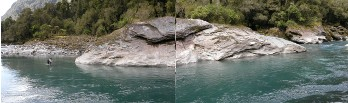
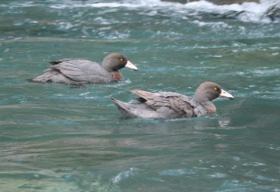
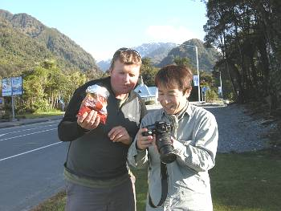

釣行日誌 ＮＺ編 「翡翠、黄金、そして銀塊」
ディーン君のロールキャスト
2010/11/23(TUE)-5
大淵で鰐部さんとともに良い型の鱒をキャッチできたので、少々疲れが出てきた僕の足取りもいっぺんに軽くなった。それでも大股で素早く前を歩いていくディーンに付いて行くのは容易ではない。
しばらく遡行して行くと、今度は対岸に巨大な岩盤のあるポイントに出た。岩盤の手前は急に深くなっており、主流は流れも強く、ここを越えるには高巻きしか無さそうだった。すると、ディーンが、上流側の岩盤のヘチに定位している鱒を見つけ出した。今度もカツのロングキャストの出番のようだった。

その鱒は、岩盤のエグレのすぐ下、ほとんど止水となっているポイントに留まりながら泳いでいたが、だいたいの位置をディーンがカツに教え、カツがキャストの体勢に入った。腰まで水に浸かり、バックキャストを高くしながらカツが狙う。しかし届かない。さらに深く立ち込み再度のロングキャスト。だがあと数メートルほど足りない。しばらく狙ってみたものの、もうこれ以上近寄ることは淵が深すぎてできないので、代わりにディーンが僕に釣って見ろと言う。こちら岸からはバックキャストのスペースがほとんど無いので、僕は尻込みしてしまい、とてもダメだよと言うと、ディーンが僕のロッドで釣ってみることになった。本流の流れを挟んでディーンはロールキャストを繰り出した。しっかりとタメた後に鋭く手首を返すと、ロッドの反発を最大限利用してラインがフライを運んで行く。一度、二度、そして三度。対岸近くに落ちたフライがどこを流れているか、視認することはできなかったが、不意に鱒が身体の向きを変え、流芯に向かって動いた。ディーンはそれに気づかず無頓着にロッドを立てる。
「？？？」
「ディーン、ストライクだ！ 魚がフライを食ったぞ！」
ディーンがあれっ？という顔をして、リールを巻き始める。鱒は水中で大きく暴れ、ロッドを引き絞る。ディーンが余分なラインを巻き取りながら、
「ゴウ！ ロッドを渡すからこの鱒を釣り上げろ！」
と叫ぶ。こちらはデジカメで動画を撮っていたのでそれはできんと答えると、
「いいから釣れ釣れ！」
と言って、引き絞られたロッドを手渡してくれた。ずっしりと重い鱒の手応えを感じながら、慎重に魚を下流へと誘導する。人のふんどしで相撲を取っているようで決まりが悪いが、魚をやりとりするのは楽しい。ガイドに釣ってもらっちゃって、まるで子供のようである。そろそろ鱒が弱ってきたのを見計らい、ディーンがすかさずネットでランディングする。
「ありがとう！」
「ナイスキャッチ！」
ディーン君の親切をありがたく受け止め、お礼の言葉を述べた。鱒を水に戻してやると、午後４時近くであり、時間的にこれが今日の最後の鱒となった。ヘリの着陸できるポイントのある下流へ戻ることになり、対岸の鰐部さんを呼んで三人で歩き出す。途中、ブルーダックのつがいが居たのでディーンが写真を写した。

少し下流に歩くと、川を渡れるポイントがあったので、鰐部さんがこちら岸に渡り、三人で歩き出した。30分ほど歩くと砂利の河原へ出た。ここがヘリのお迎え地点である。ほっと一息ついていると、ディーンが足で砂利の凹凸を均し始めた。そのままの河原の状態ではヘリの着陸に支障があるらしい。疲れた身体に鞭打ちながら、カツと三人で砂利を動かす。ざくざくと重い砂利が足に痛い。ディーンは一抱えもあるような大石を担ぎ上げて脇にどかしている。つくづく西洋人の身体のパワーには勝てないと思う。三人して15分ほど思わぬ土木作業をすると、河原はどうやらフラットになり、一休みしてヘリを待つことになった。
三人で今日の釣りを振り返って談笑していると、10分ほどしてカン高いヘリのエンジン音が聞こえてきた。下流側から近づいてきたヘリはゆっくりとしたアプローチの後に地ならしした砂利の上に着陸した。砂利を巻き上げることもなく、平穏な着陸だった。乗り込む時と同様にディーンが荷物一式を積み込んでくれ、僕たちは前部座席に乗り込む。ディーンが乗り込んでヘリは再び舞い上がった。一日の素晴らしい釣りをもたらしてくれた川を後にして僕たちはジェームズさんのヘリポートに戻った。
ヘリポートのすぐ前には高い木立があるのだが、ジェームズさんはまったく意に介することなくヘリを着陸させた。荷物を取り出し、車の前でウェーダーを脱ぐ。一日の釣りが終わった。談笑しているディーンとジェームズさんの話に入り、ヘリの代金をキャッシュで支払う。それじゃあまた明日と言うことで、明日もヘリフィッシングを楽しむことになった。ディーンのハイラックスに乗り込み、三人は北を目指して走り出す。
途中、フォックス氷河の商店街で車を停め、ピザ屋さんでピザを注文し、出来上がるまでの間、ジュースとポテトチップスを買って道路脇のテーブルで腹ごしらえをした。テーブルのすぐ前は小さな警察署というか派出所になっており、ディーンはパトカーに乗って出かける所だった顔見知りの警察官と立ち話を始めた。ピザが焼き上がり、ディーンとカツと僕はテーブルでピザに舌鼓を打った。遠くのアルプスが綺麗に見えた。

ディーンの少々怖いドライブを２時間半ほど楽しみ、日照時間の長いウェストランドもようやく暗くなった頃、ホキティカに着いた。インド料理店でカレーのテイクアウトを買ってB&Bに戻り、三人で夕食となった。初日の釣りが好調だったのでみんなの口も軽い。カレーを食べつつ冗談が飛び交う。おなかいっぱい夕食を頂いた後は、手早くシャワーを浴びて真新しいシーツの心地よいベッドに崩れ落ちた。午後11時半であった。
釣行日誌ＮＺ編 目次へ
サイトマップ
ホームへ
お問い合わせ